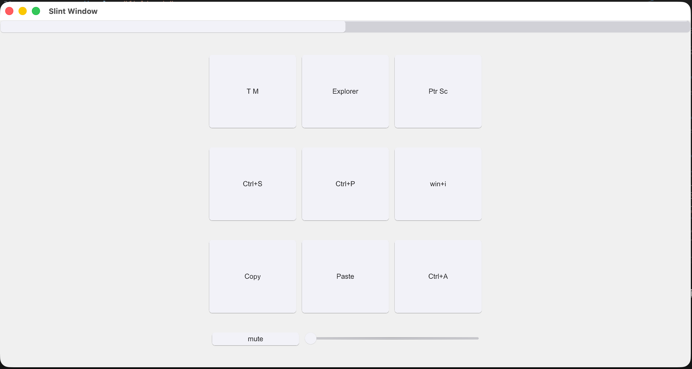
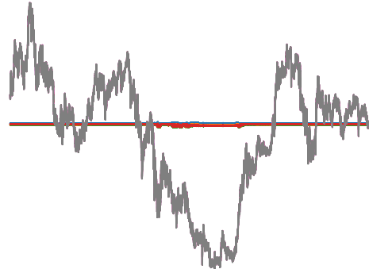
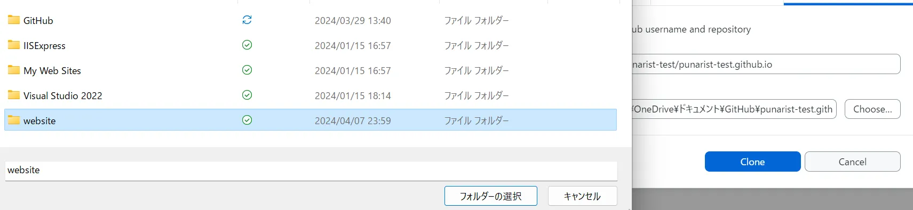
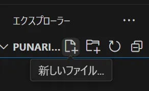
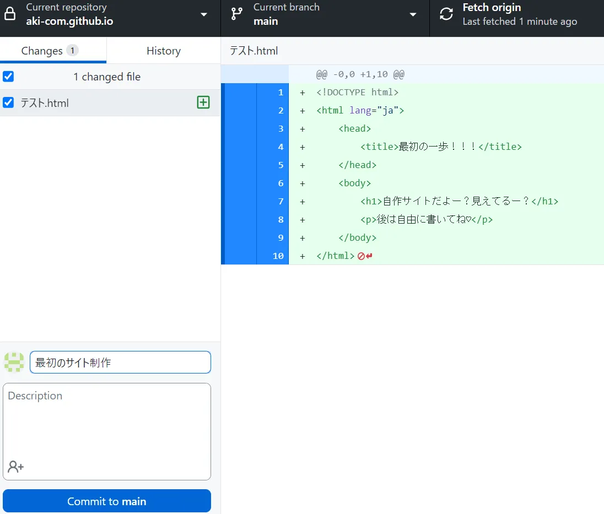

ぽーとふぉりお
小室 明輝
こんにちは！このページでは、私がこれまでに挑戦してきたことや、身につけてきた技術をまとめています。
全部を記載している訳ではありませんが、参考になったら幸いです
1. プロフィール
| 名前 | 小室 明輝 |
|---|---|
| 学部・学科 | 日本工業大学 先進工学部 データサイエンス学科 |
| 学年 | 3年生 |
| 趣味 | プログラミング、創作物の制作 |
私は日本工業大学先進工学部データサイエンス学科の現在3年生です
マイクロコンピュータ研究部という部活動に所属しています。
趣味で様々な創作物を作成しており、主にプログラムを行なっています
大学に入学してからITを中心に様々な知識を蓄えてきました。
このページでは、私がこれまでに挑戦してきたことや、身につけてきた技術をまとめています。
2. 作ってきたもの
-
アプリ・システムなど
Useful Device
全OS対応のクロスプラットフォーム便利アプリを目指しました
現在もより良いものを目指し、改良中です
- 使用技術: mdns、Bonjour、Slint、Rust、非同期、通信など
- 制作期間: 3ヶ月 作成人数: 2人
- GitHub: Useful Device
FX_予測AI
初めてのpython、AIで、学習を目指し作ったものです
正規化などデータ加工を頑張りました
- 使用技術: Python、matplot、keras、NumPy、並列化、GPU学習など
- 制作期間: 1ヶ月
- GitHub: FX_予測AI
テトリスの探索

より早く、より多くの場面を探索することを目標としました
GPUプログラミングや、Simdなどの計算技術や
ハッシュマップを用いたアルゴリズム、並列化など多くの工夫をしました
- 使用技術: C++、Rust、python、CUDA、Simd、データ構造、並列化(rayon)、pyO3
- 制作期間: 2ヶ月
- GitHub: テトリスの探索
-
ウェブサービス
WebSite
実際にgoogleやbingにサイトを載せて、最大5000アクセス/日を達成しました
静的コンテンツしか書けない中で、JSによるテンプレート化を成功させました
- 使用技術: HTML/CSS, JavaScript、SEO、ruby(jekyll)、PageClipなど
- 制作期間: １ヶ月
作品2
作品2の説明文...
作品3
作品3の説明文...
-
ゲーム
テトリス
JavaScriptで作成したテトリスゲームです。
- 使用技術: HTML, CSS, JavaScript
- 制作期間: 2週間
作品2
作品2の説明文...
作品3
作品3の説明文...
3. 使っているサービス一覧
次にPC側のセットアップです。
ダウンロードページにアクセスし、ダウンロードをクリック
- ファイル、フォルダを確認しやすい！
- 理論上どんなプログラムも動く！
- github copilot(コードを書くAI)が使える！（学生以外有料）
- windowsユーザーもmacユーザーもよく使う！
- それぞれのsetup.exe がダウンロードされたと思うので開いてアプリケーションをインストールします。（mac版は飛ばす）
-
完了したらGithub Desktopを開いて「Clone a repository」→「Sign in」をクリックしてログイン

- すると、先ほど作成した「"ユーザー名"/"ユーザー名".githun.io」（←リポジトリ名と呼ぶ）という表記があると思うので選択、下のほうにある「Clone "リポジトリ名"」をクリック
-
そうすると、
- repository
- Local path
という項目が出るのでLocal pathだけ変えます。（Chooseで簡単にファイル指定）
Local pathについて
PC内で保存する場所を決めます
具体的な場所ですが、おすすめはDocumentsもしくはドキュメントに「website」というフォルダを作成してその中に保存することをお勧めします。
 - 「Clone」をクリック
ダウンロード中にご覧ください↓
Github Desktopとは？
本来、githubはコマンドで操作するので初心者が扱えるものじゃないんですがこのアプリを使うとそれが解決します。（githubの使い方を調べると頭がパンクすると思います）
VScodeとは？
このソフト上でコードを書きます。
という利点があり、VScodeを使用します。
これで全ての準備が整いました！残りはhtmlを作成して終わりです！
4. サイト公開
最後にサイトを公開します！
-
VScodeを開いて「フォルダを開く」→Cloneで指定したフォルダの中に「"ユーザー名".github.io"」というフォルダが作成されているのでそれを選択
例）「ドキュメント」→「website」→「"ユーザー名.github.io"」
-
"Ctrl+Shift+E"を押してフォルダを表示、ファイルを作成
 - 「テスト.html」というファイルを作成(ファイルの名前がURLになる)、以下のコードを入力
- 「F5キー」を押して「Webアプリ(Edge)」で実行＆セーブができる
-
Github Desktopを開いて、更新内容を記載
 - 左下の「Commit to main」をクリック→右上の「Fetch origin」をクリック
<!DOCTYPE html>
<html lang="ja">
<head>
<title>最初の一歩！！！</title>
</head>
<body>
<h1>自作サイトだよー？見えてるー？</h1>
<p>後は自由に書いてね♡</p>
</body>
</html>
これでサイトが公開されました！
5. 最後に
終わらねぇぇヨォぉぉぉぉおぉおぉぉおぉｘ